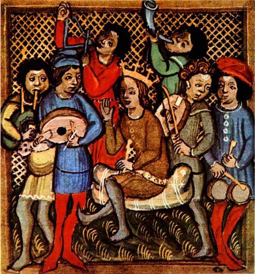

PORTUGUES
Trovadorismo

O trovadorismo é um movimento literário marcado pela produção de cantigas líricas
(focadas em sentimentos e emoções) e cantigas satíricas (com críticas diretas ou indiretas).
Considerado o primeiro movimento literário europeu, ele reuniu registros escritos da primeira época da
literatura medieval entre os séculos XI e XIV.
Esse movimento, que ocorreu somente na Europa, teve como principal característica a
aproximação da música e da poesia.
Nessa época, as poesias eram feitas para serem cantadas ao som de instrumentos musicais. Geralmente, eram acompanhadas por flauta, viola, alaúde, e daí o nome “cantigas”.
O autor das cantigas era chamado de trovador, enquanto o jogral as declamava e o menestrel, além de recitar, também tocava os instrumentos. Por isso, o menestrel era considerado superior ao jogral por ter mais instrução e habilidade artística, pois sabia tocar e cantar.
Todos os manuscritos das cantigas trovadorescas encontradas estão reunidas em documentos chamados de “cancioneiros”.
O trovadorismo é, sem dúvida, uma das manifestações literárias mais importantes para a história da humanidade e consolidação da literatura como forma de arte.
Sendo considerada a primeira escola literária da qual temos conhecimento, o trovadorismo teve seu início lá na Europa e teve seu apogeu nos séculos XII e XIII, entrando em declínio no século XIV.
Suas principais obras, chamadas de cantigas, são divididas em 4 tipos: cantigas de amor, de amigo, de escárnio e de maldizer.
z
CURIOSIDADE
Cantigas líricas e satíricas
É o primeiro movimento literário europeu, datado na idade medieval entre os séculos XI e XIV. Sua principal característica é a produção de cantigas líricas (focadas em sentimentos e emoções) e satíricas (com críticas diretas ou indiretas)
Aproximação da música e poesia
O autor das cantigas era chamado de “trovador”, enquanto o “jogral” as declamava e o “menestrel”, além de recitar, tocava os instrumentos. Todos os manuscritos das cantigas trovadorescas encontradas estão reunidos em documentos chamados de “cancioneiros”.
Os 4 tipos de cantigas do trovadorismo
Dependendo do tema, da estrutura, da linguagem e do eu lírico, as cantigas trovadorescas são classificadas em quatro tipos: cantigas de amor, de amigo, de escárnio e de maldizer.
Cantigas de amor: os sentimentos são expressos com mais profundidade, sendo que o tema mais frequente é o sofrimento amoroso;
Cantigas de amigo: o trovador procura traduzir os sentimentos femininos, falando como se fosse uma mulher. Nessa época, a palavra “amigo” significava “namorado” ou “amante”;
Cantigas de escárnio e maldizer: reuniam versos que criticavam a sociedade, os costumes e ridicularizavam os defeitos humanos.
Marco inicial da literatura portuguesa
O ano de 1189 (ou 1198) é a data provável da primeira composição literária conhecida “Cantiga da Ribeirinha” ou “Cantiga de Guarvaia”. Ela foi escrita pelo trovador Paio Soares da Taveirós e dedicada a dona Maria Pais Ribeiro.
O rei também escrevia
O rei D. Dinis (1261-1325) foi um grande incentivador que prestigiou a produção poética em sua corte. Foi ele próprio um dos mais talentosos trovadores medievais com uma produção de 140 cantigas líricas e satíricas.
Desenvolvido por [Rebeca] - IW1 - Etec Prof. Milton Gazzetti © 2025